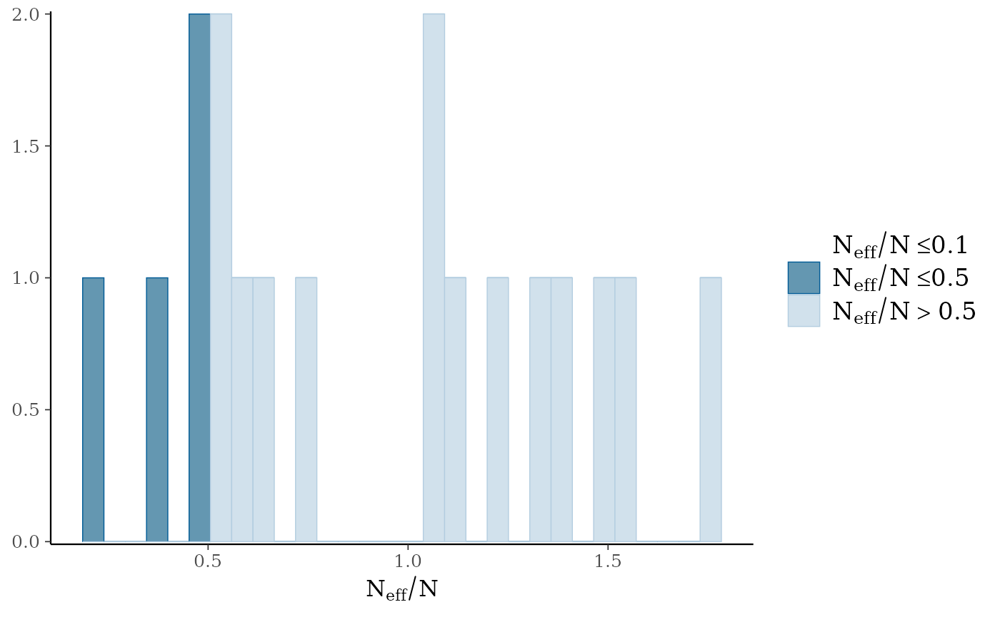
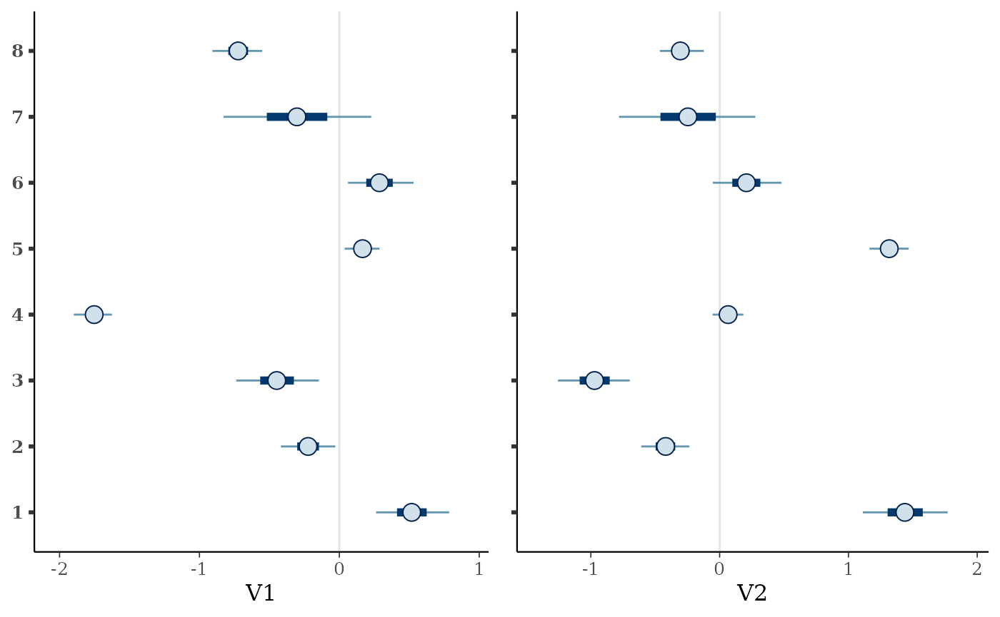
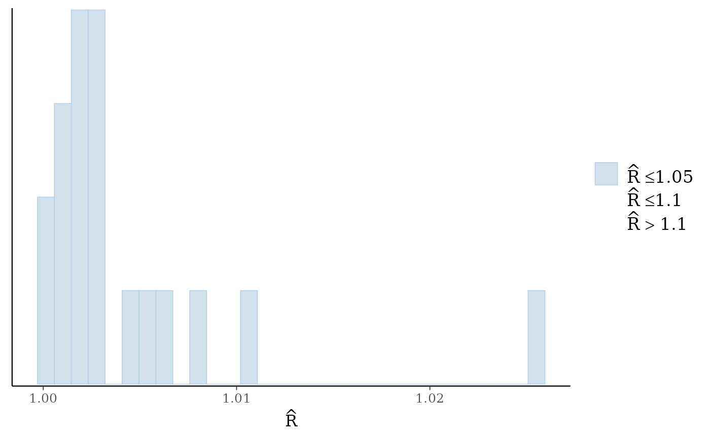
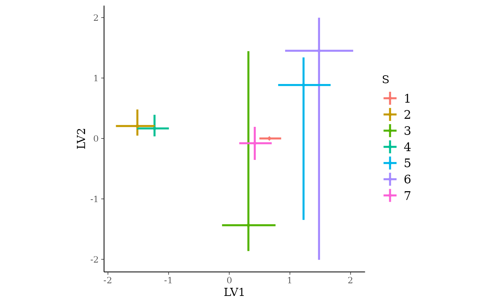

Overview
jsdmstan-overview.RmdJoint Species Distribution Models
Joint Species Distibution Models, or jSDMs, are models that model an entire community of species simultaneously. The idea behind these is that they allow information to be borrowed across species, such that the covariance between species can be used to inform the predictions of distributions of related or commonly co-occurring species.
In plain language (or as plain as I can manage) jSDMs involve the modelling of an entire species community as a function of some combination of intercepts, covariate data and species covariance. Therefore the change of a single species is related to not only change in the environment but also how it relates to other species. There are several decisions to be made in how to specify these models - the standard decisions on which covariates to include, whether each species should have its own intercept (generally yes) and how to represent change across sites - but also how to represent the covariance between species. There are two options for representing this species covariance in this package. First, the original way of running jSDMs was to model the entire covariance matrix between species in a multivariate generalised linear mixed model (MGLMM). However, more recently there have been methods developed that involve representing the covariance matrix with a set of linear latent variables - known as generalised linear latent variable models (GLLVM).
The jsdmstan package aims to provide an interface for fitting these models in Stan using the Stan Hamiltonian Monte Carlo sampling as a robust Bayesian methodology.
Underlying maths
Feel free to skip this bit if you don’t want to read equations, it is largely based on Warton et al. (2015). We model the community data for each site and taxon as a function of a species intercept, environmental covariates and species covariance matrix:
where is the link function, is the transpose of vector , and for each taxon , is an intercept and is a vector of regression coefficients related to measured predictors.
A site effect can also be added to adjust for total abundance or richness:
Multivariate Generalised Linear Mixed Models
The entire matrix of covariance between species is modelled in MGLMMs.
Fitting the entire covariance matrix means that the amount of time required to fit these models scales with the number of species cubed, and the data required scales with the number of species squared. This makes these models both computationally and data intensive.
Generalised Linear Latent Variable Models
In response to some of these issues in fitting MGLMMs, GLLVMs were developed in which is now specified as a linear function of a set of latent variables :
The latent variables are treated as random by assuming:
Treating the species covariance as pulling from a set of latent variables greatly reduces the computational time required to fit these models.
Relationship to environmental covariates
The default approach in jsdmstan is to assume that the response of species to environmental covariates is constrained by a covariance matrix between the environmental covariates. This assumes that if one species is strongly positively related to multiple covariates then it is more likely that other species will either also be positively related to all these covariates, or negatively related. Mathematically this maybe corresponds to:
This default behaviour can be overridden through specifying the
beta_param argument to "unstruct" if you want
the betas to just draw from some distribution set through
jsdm_prior().
Fitting a MGLMM
First we can use the in-built functions for simulating data according
to the MGLMM model - we’ll choose to simulate 15 species over 200 sites
with 2 environmental covariates. The species are assumed to follow a
Poisson distribution (with a log-link), and we use the defaults of
including a species-specific intercept but no site-specific intercept.
At the moment only default priors (standard normal distribution) are
supported. We can do this using either the jsdm_sim_data
function with method = "mglmm" or with the
mglmm_sim_data function which just calls
jsdm_sim_data in the background.
nsites <- 60
nspecies <- 8
ncovar <- 2
mglmm_test_data <- mglmm_sim_data(N = nsites, S = nspecies,
K = ncovar, family = "pois")This returns a list, which includes the Y matrix, the X matrix, plus also the exact parameters used to create the data:
names(mglmm_test_data)
#> [1] "Y" "pars" "N" "S" "D" "K" "X"
dat <- as.data.frame(mglmm_test_data$X)Now, to fit the model we can use the stan_jsdm function,
which interfaces to Stan through the rstan package. There are two ways
to supply data to the stan_jsdm function, one is to supply
the data as a list with the appropriate named components (the
jsdm_sim_data functions supply data in the correct format
already) and the other is to specify the Y and X matrices directly,
which is what we’ll use here:
mglmm_fit <- stan_jsdm(~ V1 + V2, data = dat, Y = mglmm_test_data$Y,
family = "pois", method = "mglmm", refresh = 0,
log_lik = FALSE)
#> Trying to compile a simple C file
#> Running /opt/R/4.4.1/lib/R/bin/R CMD SHLIB foo.c
#> using C compiler: ‘gcc (Ubuntu 11.4.0-1ubuntu1~22.04) 11.4.0’
#> gcc -I"/opt/R/4.4.1/lib/R/include" -DNDEBUG -I"/home/runner/work/_temp/Library/Rcpp/include/" -I"/home/runner/work/_temp/Library/RcppEigen/include/" -I"/home/runner/work/_temp/Library/RcppEigen/include/unsupported" -I"/home/runner/work/_temp/Library/BH/include" -I"/home/runner/work/_temp/Library/StanHeaders/include/src/" -I"/home/runner/work/_temp/Library/StanHeaders/include/" -I"/home/runner/work/_temp/Library/RcppParallel/include/" -I"/home/runner/work/_temp/Library/rstan/include" -DEIGEN_NO_DEBUG -DBOOST_DISABLE_ASSERTS -DBOOST_PENDING_INTEGER_LOG2_HPP -DSTAN_THREADS -DUSE_STANC3 -DSTRICT_R_HEADERS -DBOOST_PHOENIX_NO_VARIADIC_EXPRESSION -D_HAS_AUTO_PTR_ETC=0 -include '/home/runner/work/_temp/Library/StanHeaders/include/stan/math/prim/fun/Eigen.hpp' -D_REENTRANT -DRCPP_PARALLEL_USE_TBB=1 -I/usr/local/include -fpic -g -O2 -c foo.c -o foo.o
#> In file included from /home/runner/work/_temp/Library/RcppEigen/include/Eigen/Core:19,
#> from /home/runner/work/_temp/Library/RcppEigen/include/Eigen/Dense:1,
#> from /home/runner/work/_temp/Library/StanHeaders/include/stan/math/prim/fun/Eigen.hpp:22,
#> from <command-line>:
#> /home/runner/work/_temp/Library/RcppEigen/include/Eigen/src/Core/util/Macros.h:679:10: fatal error: cmath: No such file or directory
#> 679 | #include <cmath>
#> | ^~~~~~~
#> compilation terminated.
#> make: *** [/opt/R/4.4.1/lib/R/etc/Makeconf:195: foo.o] Error 1If we print the model object we will get a brief overview of the type of jSDM and the data, plus if there are any parameters with Rhat > 1.01 or effective sample size ratio (Neff/N) < 0.05 then they will be printed:
mglmm_fit
#> Family: poisson
#> Model type: mglmm
#> Number of species: 8
#> Number of sites: 60
#> Number of predictors: 3
#>
#> Model run on 4 chains with 4000 iterations per chain (2000 warmup).
#>
#> No parameters with Rhat > 1.01 or Neff/N < 0.05To get a summary of all the model parameters we can use
summary, there are many parameters in these models so we
just include a few here:
summary(mglmm_fit, pars = "cor_species")
#> mean sd 15% 85% Rhat Bulk.ESS Tail.ESS
#> cor_species[2,1] 0.028 0.281 -0.262 0.316 1.002 1221 2374
#> cor_species[3,1] 0.009 0.176 -0.174 0.191 1.001 2564 4131
#> cor_species[4,1] 0.242 0.177 0.059 0.425 1.000 2450 3337
#> cor_species[5,1] 0.086 0.117 -0.036 0.206 1.002 3793 5314
#> cor_species[6,1] -0.132 0.181 -0.316 0.055 1.001 2838 3688
#> cor_species[7,1] -0.181 0.136 -0.322 -0.039 1.001 2940 4948
#> cor_species[8,1] -0.271 0.247 -0.527 -0.008 1.005 1311 1838
#> cor_species[1,2] 0.028 0.281 -0.262 0.316 1.002 1221 2374
#> cor_species[2,2] 1.000 0.000 1.000 1.000 1.001 8037 NA
#> cor_species[3,2] 0.036 0.269 -0.240 0.313 1.004 1567 2215
#> cor_species[4,2] -0.259 0.293 -0.555 0.058 1.003 1618 2235
#> cor_species[5,2] 0.089 0.262 -0.178 0.362 1.004 1125 1892
#> cor_species[6,2] 0.008 0.278 -0.281 0.299 1.004 1882 2755
#> cor_species[7,2] 0.108 0.270 -0.166 0.388 1.006 1075 1563
#> cor_species[8,2] 0.023 0.296 -0.292 0.342 1.001 2945 4908
#> cor_species[1,3] 0.009 0.176 -0.174 0.191 1.001 2564 4131
#> cor_species[2,3] 0.036 0.269 -0.240 0.313 1.004 1567 2215
#> cor_species[3,3] 1.000 0.000 1.000 1.000 1.000 7792 NA
#> cor_species[4,3] 0.036 0.178 -0.152 0.221 1.000 3636 5383
#> cor_species[5,3] 0.455 0.143 0.304 0.605 1.001 3358 5112
#> cor_species[6,3] 0.482 0.180 0.293 0.674 1.000 4327 5676
#> cor_species[7,3] -0.274 0.148 -0.430 -0.120 1.001 3222 5105
#> cor_species[8,3] 0.285 0.230 0.055 0.525 1.000 2342 2024
#> cor_species[1,4] 0.242 0.177 0.059 0.425 1.000 2450 3337
#> cor_species[2,4] -0.259 0.293 -0.555 0.058 1.003 1618 2235
#> cor_species[3,4] 0.036 0.178 -0.152 0.221 1.000 3636 5383
#> cor_species[4,4] 1.000 0.000 1.000 1.000 1.000 8026 6853
#> cor_species[5,4] -0.198 0.171 -0.375 -0.021 1.001 2381 4381
#> cor_species[6,4] -0.122 0.195 -0.326 0.083 1.000 4415 5681
#> cor_species[7,4] -0.191 0.165 -0.361 -0.019 1.001 3249 5112
#> cor_species[8,4] -0.164 0.243 -0.415 0.085 1.000 3072 2679
#> cor_species[1,5] 0.086 0.117 -0.036 0.206 1.002 3793 5314
#> cor_species[2,5] 0.089 0.262 -0.178 0.362 1.004 1125 1892
#> cor_species[3,5] 0.455 0.143 0.304 0.605 1.001 3358 5112
#> cor_species[4,5] -0.198 0.171 -0.375 -0.021 1.001 2381 4381
#> cor_species[5,5] 1.000 0.000 1.000 1.000 1.000 6756 7552
#> cor_species[6,5] 0.215 0.175 0.037 0.398 1.000 3173 4339
#> cor_species[7,5] 0.178 0.118 0.058 0.300 1.000 3952 5534
#> cor_species[8,5] 0.217 0.233 -0.014 0.459 1.002 1523 1537
#> cor_species[1,6] -0.132 0.181 -0.316 0.055 1.001 2838 3688
#> cor_species[2,6] 0.008 0.278 -0.281 0.299 1.004 1882 2755
#> cor_species[3,6] 0.482 0.180 0.293 0.674 1.000 4327 5676
#> cor_species[4,6] -0.122 0.195 -0.326 0.083 1.000 4415 5681
#> cor_species[5,6] 0.215 0.175 0.037 0.398 1.000 3173 4339
#> cor_species[6,6] 1.000 0.000 1.000 1.000 1.000 8082 8023
#> cor_species[7,6] -0.384 0.174 -0.567 -0.206 1.001 2772 4414
#> cor_species[8,6] 0.360 0.229 0.130 0.590 1.000 2998 2283
#> cor_species[1,7] -0.181 0.136 -0.322 -0.039 1.001 2940 4948
#> cor_species[2,7] 0.108 0.270 -0.166 0.388 1.006 1075 1563
#> cor_species[3,7] -0.274 0.148 -0.430 -0.120 1.001 3222 5105
#> cor_species[4,7] -0.191 0.165 -0.361 -0.019 1.001 3249 5112
#> cor_species[5,7] 0.178 0.118 0.058 0.300 1.000 3952 5534
#> cor_species[6,7] -0.384 0.174 -0.567 -0.206 1.001 2772 4414
#> cor_species[7,7] 1.000 0.000 1.000 1.000 1.000 7955 7854
#> cor_species[8,7] 0.005 0.236 -0.238 0.244 1.003 1676 2538
#> cor_species[1,8] -0.271 0.247 -0.527 -0.008 1.005 1311 1838
#> cor_species[2,8] 0.023 0.296 -0.292 0.342 1.001 2945 4908
#> cor_species[3,8] 0.285 0.230 0.055 0.525 1.000 2342 2024
#> cor_species[4,8] -0.164 0.243 -0.415 0.085 1.000 3072 2679
#> cor_species[5,8] 0.217 0.233 -0.014 0.459 1.002 1523 1537
#> cor_species[6,8] 0.360 0.229 0.130 0.590 1.000 2998 2283
#> cor_species[7,8] 0.005 0.236 -0.238 0.244 1.003 1676 2538
#> cor_species[8,8] 1.000 0.000 1.000 1.000 1.000 7976 7302To get a better overview of the R-hat and effective sample size we
can use the mcmc_plot function to plot histograms of R-hat
and ESS.
mcmc_plot(mglmm_fit, plotfun = "rhat_hist")
#> `stat_bin()` using `bins = 30`. Pick better value with `binwidth`.
mcmc_plot(mglmm_fit, plotfun = "neff_hist")
#> `stat_bin()` using `bins = 30`. Pick better value with `binwidth`.
We can also examine the output for each parameter visually using a
traceplot combined with a density plot, which is given by the default
plot command:
plot(mglmm_fit, ask = FALSE)#> Warning in regularize.values(x, y, ties, missing(ties), na.rm = na.rm):
#> collapsing to unique 'x' valuesBy default the plot command plots all of the parameters
with sigma or kappa in their name plus a random selection of 20 other
parameters, but this can be overridden by either specifying the
parameters by name (with or without regular expression matching) or
changing the number of parameters to be randomly sampled. Use the
get_parnames function to get the names of parameters within
a model - and the jsdm_stancode function can also be used
to see the underlying structure of the model.
All the mcmc plot types within bayesplot are supported by the
mcmc_plot function, and to see a full list either use
bayesplot::available_mcmc or run mcmc_plot
with an incorrect type and the options will be printed.
We can also view the environmental effect parameters for each species
using the envplot function.
envplot(mglmm_fit)
Posterior predictions can be extracted from the models using either
posterior_linpred or posterior_predict, where
the linpred function extracts the linear predictor for the community
composition within each draw and the predict function combines this
linear predictor extraction with a random generation based on the
predicted probability for the family. Both functions by default return a
list of length equal to the number of draws extracted, where each
element of the list is a sites by species matrix.
mglmm_pp <- posterior_predict(mglmm_fit)
length(mglmm_pp)
#> [1] 8000
dim(mglmm_pp[[1]])
#> [1] 60 8As well as the MCMC plotting functions within bayesplot the ppc_
family of functions is also supported through the pp_check
function. This family of functions provides a graphical way to check
your posterior against the data used within the model to evaluate model
fit - called a posterior retrodictive check (or posterior predictive
historically and when the prior only has been sampled from). To use
these you need to have set save_data = TRUE within the
stan_jsdm call. Unlike in other packages by default
pp_check for jsdmStanFit objects extracts the
posterior predictions then calculates summary statistics over the rows
and plots those summary statistics against the same for the original
data. The default behaviour is to calculate the sum of all the species
per site - i.e. total abundance.
pp_check(mglmm_fit)
#> Using 10 posterior draws for ppc plot type 'ppc_dens_overlay' by default.The summary statistic can be changed, as can whether it is calculated for every species or every site:
pp_check(mglmm_fit, summary_stat = "mean", calc_over = "species",
plotfun = "ecdf_overlay")
#> Using 10 posterior draws for ppc plot type 'ppc_ecdf_overlay' by default.We can examine the species-specific posterior predictive check
through using multi_pp_check, or examine how well the
relationships between specific species are recovered using
pp_check with plotfun = "pairs".
As we have run the above model on simulated data and the original
data list contains the parameters used to simulate the data we can use
the mcmc_recover_ functions from bayesplot to
see how the model did:
Fitting a GLLVM
The model fitting workflow for latent variable models is very similar
to that above, with the addition of specifying the number of latent
variables (D) in the data simulation and model fit. We will also specify
a different prior from the default using the jsdm_prior
function.
set.seed(3562251)
gllvm_test_data <- gllvm_sim_data(N = 32, S = 7, D = 2, family = "gaussian",
prior = jsdm_prior(sigma = "student_t(3,0,1)",
sigmas_preds = "student_t(3,0,1)"),
beta_param = "cor")
gllvm_fit <- stan_jsdm(Y = gllvm_test_data$Y, X = gllvm_test_data$X,
D = gllvm_test_data$D,
family = "gaussian",
method = "gllvm",
beta_param = "cor",
prior = jsdm_prior(sigma = "student_t(3,0,1)",
sigmas_preds = "student_t(3,0,1)"),
refresh = 0, log_lik = FALSE)
#> Trying to compile a simple C file
#> Running /opt/R/4.4.1/lib/R/bin/R CMD SHLIB foo.c
#> using C compiler: ‘gcc (Ubuntu 11.4.0-1ubuntu1~22.04) 11.4.0’
#> gcc -I"/opt/R/4.4.1/lib/R/include" -DNDEBUG -I"/home/runner/work/_temp/Library/Rcpp/include/" -I"/home/runner/work/_temp/Library/RcppEigen/include/" -I"/home/runner/work/_temp/Library/RcppEigen/include/unsupported" -I"/home/runner/work/_temp/Library/BH/include" -I"/home/runner/work/_temp/Library/StanHeaders/include/src/" -I"/home/runner/work/_temp/Library/StanHeaders/include/" -I"/home/runner/work/_temp/Library/RcppParallel/include/" -I"/home/runner/work/_temp/Library/rstan/include" -DEIGEN_NO_DEBUG -DBOOST_DISABLE_ASSERTS -DBOOST_PENDING_INTEGER_LOG2_HPP -DSTAN_THREADS -DUSE_STANC3 -DSTRICT_R_HEADERS -DBOOST_PHOENIX_NO_VARIADIC_EXPRESSION -D_HAS_AUTO_PTR_ETC=0 -include '/home/runner/work/_temp/Library/StanHeaders/include/stan/math/prim/fun/Eigen.hpp' -D_REENTRANT -DRCPP_PARALLEL_USE_TBB=1 -I/usr/local/include -fpic -g -O2 -c foo.c -o foo.o
#> In file included from /home/runner/work/_temp/Library/RcppEigen/include/Eigen/Core:19,
#> from /home/runner/work/_temp/Library/RcppEigen/include/Eigen/Dense:1,
#> from /home/runner/work/_temp/Library/StanHeaders/include/stan/math/prim/fun/Eigen.hpp:22,
#> from <command-line>:
#> /home/runner/work/_temp/Library/RcppEigen/include/Eigen/src/Core/util/Macros.h:679:10: fatal error: cmath: No such file or directory
#> 679 | #include <cmath>
#> | ^~~~~~~
#> compilation terminated.
#> make: *** [/opt/R/4.4.1/lib/R/etc/Makeconf:195: foo.o] Error 1
#> Warning: There were 726 divergent transitions after warmup. See
#> https://mc-stan.org/misc/warnings.html#divergent-transitions-after-warmup
#> to find out why this is a problem and how to eliminate them.
#> Warning: There were 1963 transitions after warmup that exceeded the maximum treedepth. Increase max_treedepth above 10. See
#> https://mc-stan.org/misc/warnings.html#maximum-treedepth-exceeded
#> Warning: There were 4 chains where the estimated Bayesian Fraction of Missing Information was low. See
#> https://mc-stan.org/misc/warnings.html#bfmi-low
#> Warning: Examine the pairs() plot to diagnose sampling problems
#> Warning: The largest R-hat is NA, indicating chains have not mixed.
#> Running the chains for more iterations may help. See
#> https://mc-stan.org/misc/warnings.html#r-hat
#> Warning: Bulk Effective Samples Size (ESS) is too low, indicating posterior means and medians may be unreliable.
#> Running the chains for more iterations may help. See
#> https://mc-stan.org/misc/warnings.html#bulk-ess
#> Warning: Tail Effective Samples Size (ESS) is too low, indicating posterior variances and tail quantiles may be unreliable.
#> Running the chains for more iterations may help. See
#> https://mc-stan.org/misc/warnings.html#tail-ess
gllvm_fit
#> Family: gaussian
#> With parameters: sigma,
#> Model type: gllvm with 2 latent variables
#> Number of species: 7
#> Number of sites: 32
#> Number of predictors: 1
#>
#> Model run on 4 chains with 4000 iterations per chain (2000 warmup).
#>
#> Parameters with Rhat > 1.01, or Neff/N < 0.05:
#> mean sd 15% 85% Rhat Bulk.ESS Tail.ESS
#> z_preds[1,2] 0.260 0.558 -0.256 0.806 1.011 932 2200
#> sigma[2] 0.129 0.074 0.054 0.209 1.045 70 45
#> sigma[3] 0.627 0.246 0.354 0.861 1.044 71 70
#> sigma[6] 0.583 0.322 0.200 0.942 1.077 43 31
#> sigma[7] 2.567 0.373 2.207 2.940 1.045 66 21
#> betas[1,2] 0.244 0.384 -0.137 0.642 1.012 677 1951
#> LV[1,1] -1.974 0.294 -2.259 -1.682 1.040 86 15
#> LV[1,3] -0.029 0.136 -0.169 0.115 1.012 526 1888
#> LV[1,4] -0.835 0.182 -1.022 -0.649 1.035 110 25
#> LV[1,9] -1.448 0.234 -1.672 -1.217 1.038 92 15
#> LV[1,11] -0.720 0.266 -1.006 -0.447 1.024 183 1124
#> LV[1,12] -0.466 0.145 -0.613 -0.323 1.028 131 46
#> LV[1,14] -0.960 0.252 -1.234 -0.704 1.020 234 1448
#> LV[1,15] -1.161 0.240 -1.405 -0.919 1.036 101 18
#> LV[1,17] -0.564 0.350 -0.947 -0.201 1.015 341 1272
#> LV[1,18] 0.102 0.161 -0.054 0.271 1.011 564 1666
#> LV[1,19] -0.382 0.397 -0.772 0.026 1.010 414 1282
#> LV[1,20] -0.549 0.220 -0.792 -0.329 1.016 294 1320
#> LV[1,23] -1.638 0.257 -1.883 -1.385 1.042 82 15
#> LV[1,26] -2.733 0.376 -3.094 -2.358 1.039 94 15
#> LV[1,28] -0.100 0.131 -0.235 0.028 1.020 303 1828
#> LV[1,29] -1.071 0.321 -1.400 -0.746 1.012 494 1107
#> LV[1,31] -0.688 0.239 -0.953 -0.450 1.017 279 1670
#> LV[1,32] 0.111 0.200 -0.082 0.321 1.012 476 1361
#> LV[2,9] -0.001 0.477 -0.487 0.529 1.013 327 508
#> Lambda[1,1] 0.654 0.174 0.478 0.832 1.032 94 18
#> lp__ -72.850 31.558 -102.769 -42.479 1.059 56 35Again, the diagnostic statistics seem reasonable:
mcmc_plot(gllvm_fit, plotfun = "rhat_hist")
#> `stat_bin()` using `bins = 30`. Pick better value with `binwidth`.
mcmc_plot(gllvm_fit, plotfun = "neff_hist")
#> `stat_bin()` using `bins = 30`. Pick better value with `binwidth`.For brevity’s sake we will not go into the detail of the different
functions again here, however there is one plotting function
specifically for GLLVM models - ordiplot. This plots the
species or sites scores against the latent variables from a random
selection of draws:
ordiplot(gllvm_fit)
You can change the latent variables selected by specifying the
choices argument, and alter the number of draws or whether
you want to plot species or sites with the other arguments.
Further Reading
Warton et al (2015) So many variables: joint modeling in community ecology. Trends in Ecology & Evolution, 30:766-779. DOI: 10.1016/j.tree.2015.09.007.
Wilkinson et al (2021) Defining and evaluating predictions of joint species distribution models. Methods in Ecology and Evolution, 12:394-404. DOI: 10.1111/2041-210X.13518.
Vehtari, A., Gelman, A., and Gabry, J. (2017). Practical Bayesian model evaluation using leave-one-out cross-validation and WAIC. Statistics and Computing. 27(5), 1413–1432. DOI: 10.1007/s11222-016-9696-4.